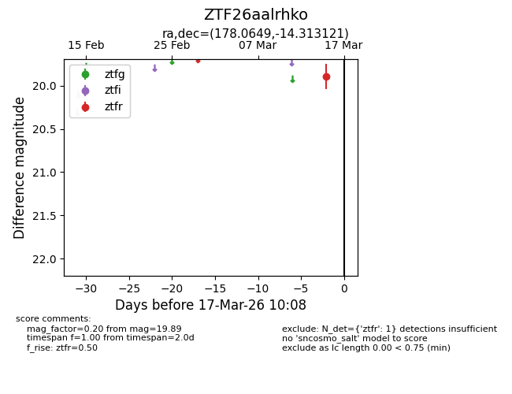
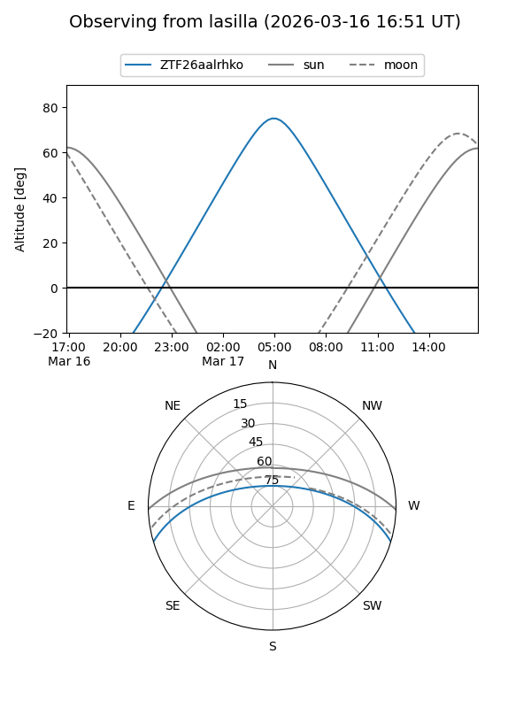
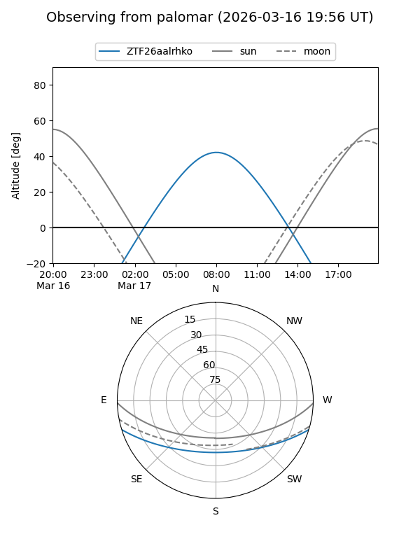

ZTF26aalrhko
Target ZTF26aalrhko at 2026-03-17 10:10
Aliases and brokers:
FINK: link
Lasair: link
ALeRCE: link
alt names
ZTF26aalrhko (ztf,fink_ztf)
Coordinates:
equatorial (ra, dec) = 178.0649,-14.31312
equatorial (HMS+DMS) = 11:52:15.57,-14:18:47.23
galactic (l, b) = (282.0099,+46.14073)
Flags:
Photometry:
last ztfr=19.89
1 ztfr detections
Lightcurve

Visibility


Additional plots